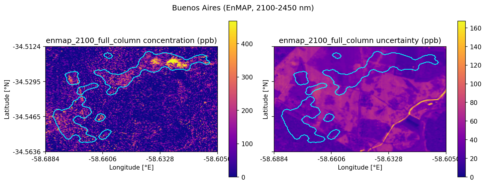
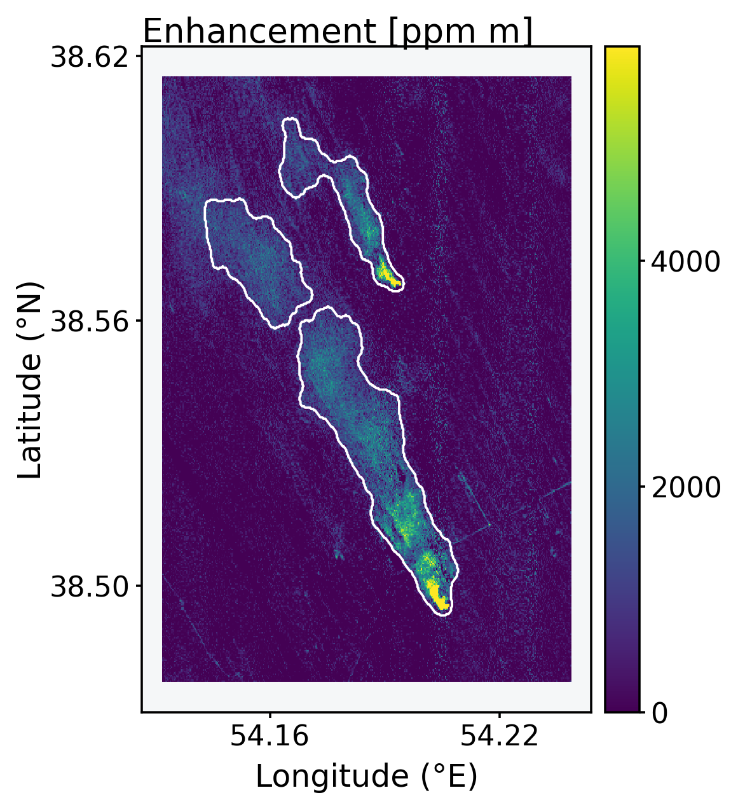
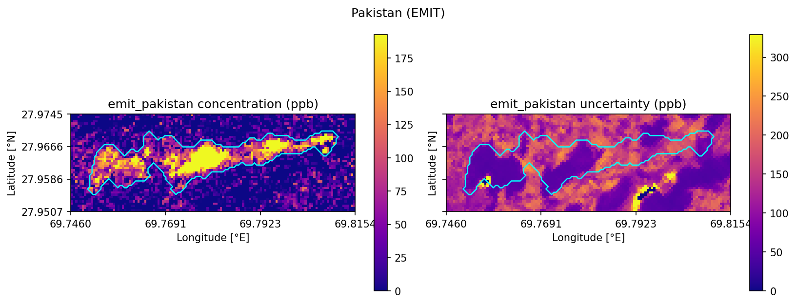
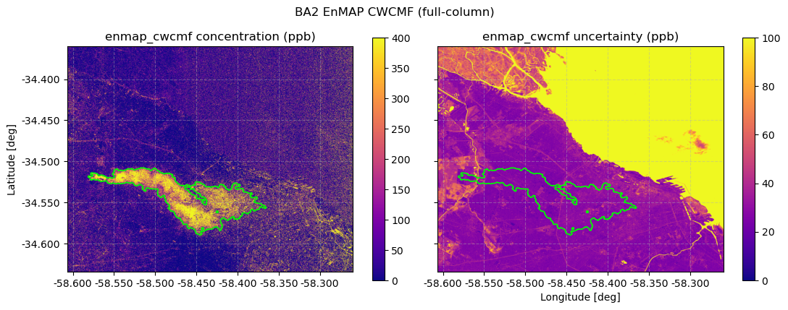
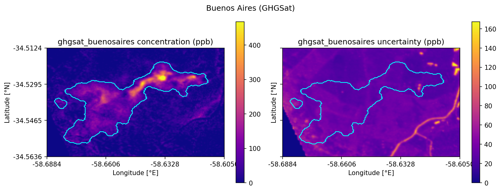
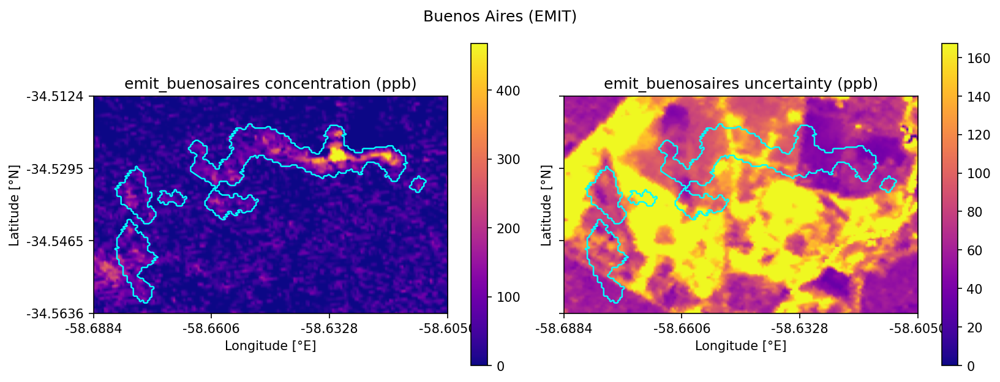
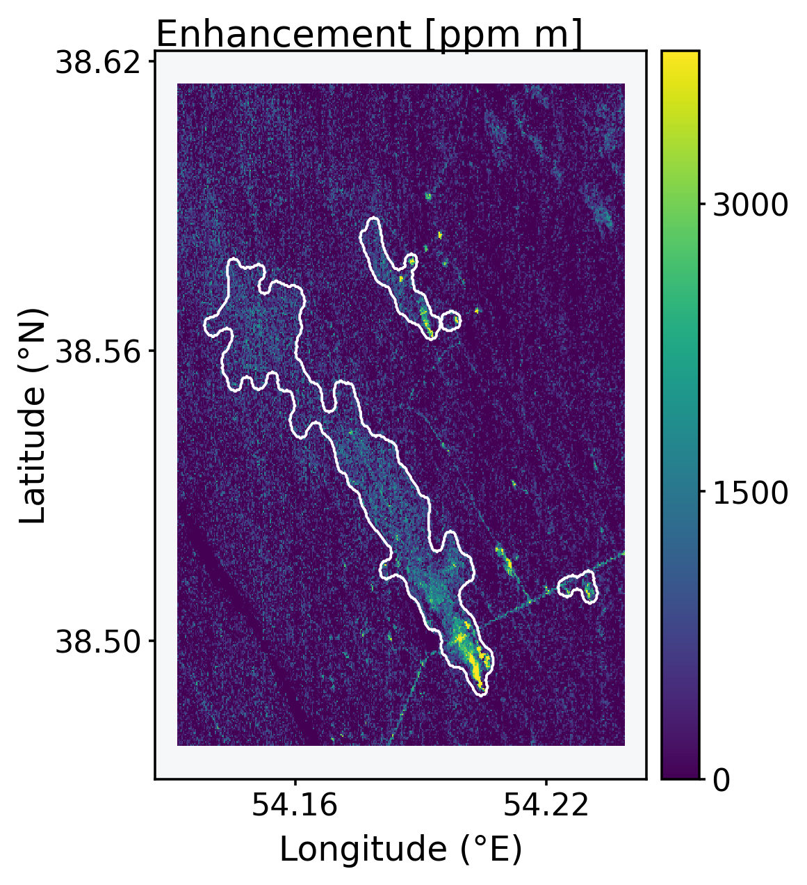
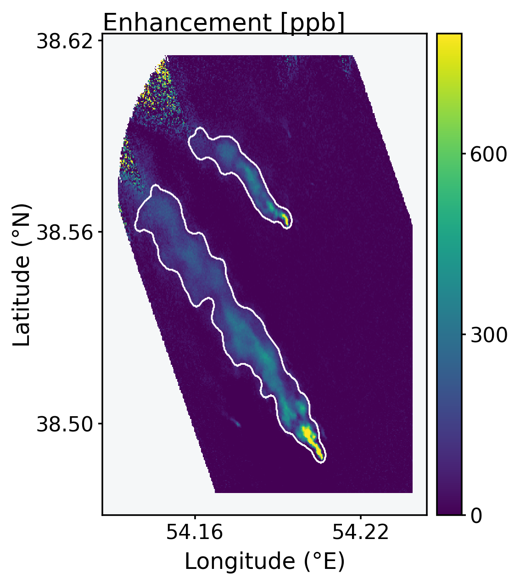
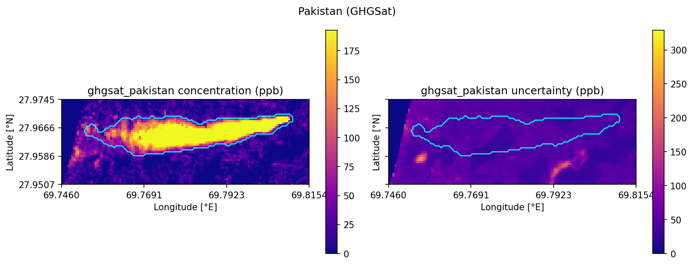
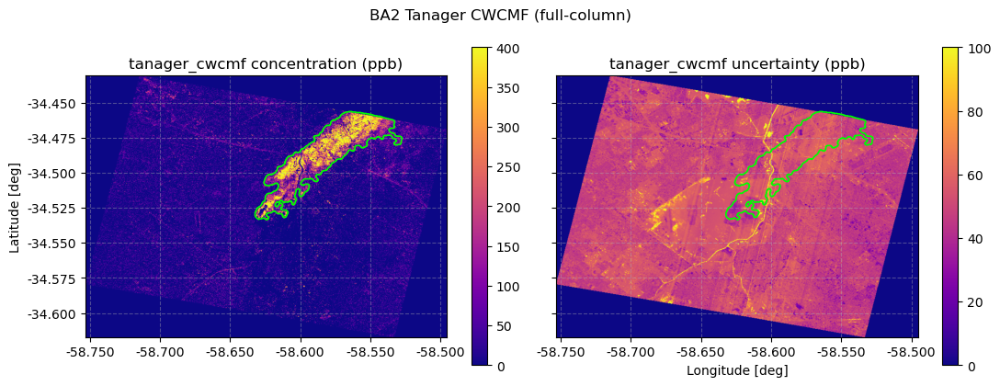

The published case studies
Explore the maps.
Follow the analysis.
Four examples connect real satellite observations to the HyGAS workflow. Inspect the figures, check acquisition times and display units, and open the reviewed notebooks.
4 case studies

12 January 2024
Buenos Aires landfill
Mixed L1 / L2
View the case →
11 September 2024
Turkmenistan
Mixed L1 / L2
View the case →
28 February 2024
Pakistan
Provider L2 analysis
View the case →
9 March 2024 / 26 June 2025
Buenos Aires: EnMAP / Tanager-1 revisit
L1 retrieval + plume analysis
View the case →Published case study
Buenos Aires landfill
Follow the methane plume above the Complejo Ambiental Norte III landfill through three satellite products and a common plume-analysis workflow.
- Location
- Buenos Aires, Argentina
- Acquisitions
- 12 January 2024
- Sensors
- EnMAP · EMIT · GHGSat
- Input path
- Mixed L1 / L2

Ferrari et al. (2026), Figure 17; EnMAP imagery: DLR. Open full size ↗


Ferrari et al. (2026), Figure 17; imagery and Level-2 product: GHGSat. Open full size ↗


Ferrari et al. (2026), Figure 17; EMIT imagery and Level-2 product: NASA/JPL. Open full size ↗
How to read this comparison
HyGAS retrieves EnMAP enhancement from Level-1 radiance and ingests the EMIT and GHGSat Level-2 products. The case compares a fixed integration area with scale-aware plume segmentation. EnMAP and GHGSat observed the site close in time; EMIT observed it later that day, so plume evolution matters when interpreting differences.
12 January 2024, UTC: GHGSat 14:45:16; EnMAP 14:46:53; EMIT 18:59:17. These are same-day acquisitions, not a strictly simultaneous three-sensor observation.
Follow the published workflow
Open the reviewed notebooks with their saved outputs. Running them locally also requires the source products and the recorded input configuration.
Plume segmentation ↗IME, flux and uncertainty analysis ↗Ferrari et al. (2026), Section 5.2; Figures 16–17; Tables 5–7. Read the reference paper →
Published case study
Turkmenistan gas compression station
Explore how three missions resolve methane plumes near the Korpedje gas compression station when plume masks follow the same physical criteria.
- Location
- Korpedje, Turkmenistan
- Acquisitions
- 11 September 2024
- Sensors
- PRISMA · EnMAP · GHGSat
- Input path
- Mixed L1 / L2

HyGAS ESRIN 2026 framework poster; EnMAP imagery: DLR. Open full size ↗


HyGAS ESRIN 2026 framework poster; PRISMA imagery: ASI. Open full size ↗


HyGAS ESRIN 2026 framework poster; imagery and Level-2 product: GHGSat. Open full size ↗
How to read this comparison
PRISMA and EnMAP Level-1 retrievals join a GHGSat Level-2 product in a common analysis. Smoothing, morphology and minimum plume area are defined in metres and rescaled to each sensor's grid. The panels preserve their original units and separate colour scales. Source variability during the acquisition window limits direct comparisons of emission rates.
11 September 2024, UTC: GHGSat 06:36:16; PRISMA 07:11:43; EnMAP 07:55:47. The three acquisitions span about 79 minutes.
Follow the published workflow
Open the reviewed notebooks with their saved outputs. Running them locally also requires the source products and the recorded input configuration.
Scale-aware plume segmentation ↗Multi-sensor IME and flux analysis ↗Ferrari et al. (2026), Section 5.3; Figures 18–19; Tables 8–10. Read the reference paper →
Published case study
Pakistan gas processing complex
A pair of observations 76 seconds apart illustrates the shared downstream treatment of provider enhancement and uncertainty products.
- Location
- Sachal Gas Processing Complex, Pakistan
- Acquisitions
- 28 February 2024
- Sensors
- EMIT · GHGSat
- Input path
- Provider L2 analysis

Ferrari et al. (2026), Figure 21; EMIT imagery and Level-2 product: NASA/JPL. Open full size ↗


Ferrari et al. (2026), Figure 21; imagery and Level-2 product: GHGSat. Open full size ↗
How to read this comparison
This example starts from EMIT and GHGSat Level-2 products. HyGAS applies common physical segmentation criteria and wind treatment to support plume integration and flux analysis. The different provider uncertainty definitions remain relevant when reading the uncertainty maps.
28 February 2024, UTC: GHGSat 04:34:05; EMIT 04:35:21. The observations are separated by 76 seconds.
Follow the published workflow
Open the reviewed notebooks with their saved outputs. Running them locally also requires the source products and the recorded input configuration.
Plume segmentation from Level-2 products ↗IME, flux and provider uncertainty ↗Ferrari et al. (2026), Section 5.4; Figures 20–21; Tables 11–13. Read the reference paper →
Published case study
Buenos Aires: EnMAP / Tanager-1 revisit
Revisit the same landfill on two different dates to examine retrieval behaviour over a heterogeneous urban and industrial background.
- Location
- Buenos Aires, Argentina
- Acquisitions
- 9 March 2024 / 26 June 2025
- Sensors
- EnMAP · Tanager-1
- Input path
- L1 retrieval + plume analysis

Ferrari et al. (2026), Figure 22, top row; EnMAP imagery: DLR. Open full size ↗


Ferrari et al. (2026), Figure 23, top row; Tanager-1 imagery: Planet. Open full size ↗
How to read this comparison
The published experiment compares scene-wide and column-wise matched-filter configurations within each scene. The gallery shows the column-wise examples. This is a non-simultaneous revisit: differences between the two dates cannot establish a contemporaneous sensor-accuracy ranking or an emission trend.
EnMAP: 9 March 2024, 14:24:31 UTC. Tanager-1: 26 June 2025, 14:44:19 UTC. These observations were acquired more than a year apart.
Follow the published workflow
Open the reviewed notebooks with their saved outputs. Running them locally also requires the source products and the recorded input configuration.
Plume segmentation for the revisit pair ↗EnMAP and Tanager-1 analysis ↗Ferrari et al. (2026), Section 5.5; Figures 22–23; Table 14. Read the reference paper →
Figures retain their source units and independent colour scales. The site displays prepared results; run the scientific workflow in your own environment.
Understand the outputs · Read the paper · Run your first retrieval
Back to the case selector ↑